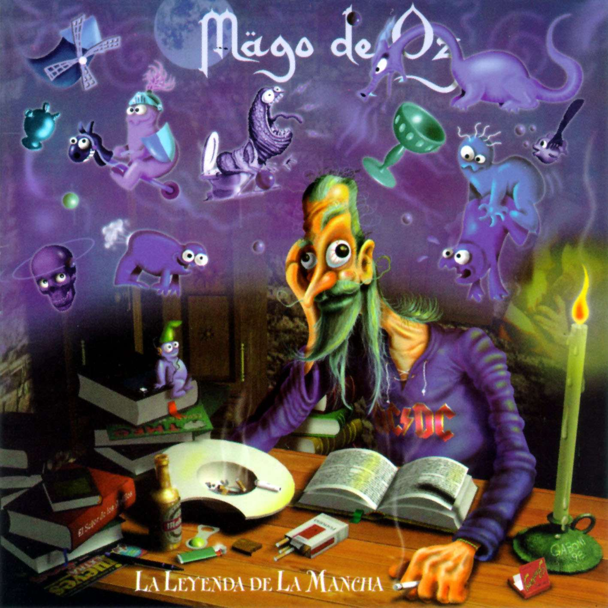

La leyenda de la mancha
Es el tercer album de la banda, en este album la banda
platea sus canciones de forma conceptual, usando uno de
los mayores clasicos de la literartura universal: Don
Quijote de la mancha de Miguel de Cervantes
- En un lugar 1:44
- El santo grial 5:08
- La leyenda de la mancha 4:18
- Noche toledana 1:12
- Molinos de viento 4:10
- Dime con quien andas 5:32
- Maritormes 4:18
- El bálsamo de fierabráz 3:38
- El pacto 5:42
- La insula de barataria 2:57
- El templo del adios 4:47
- Réquiem 8:08
- Ancha es castilla 3:43
